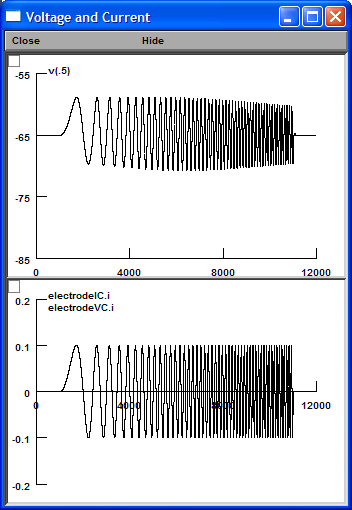
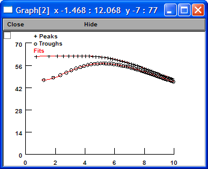
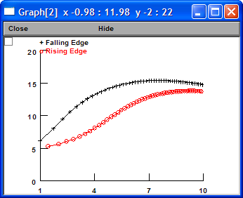
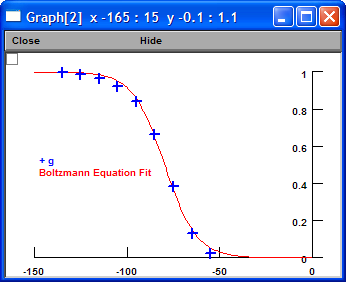
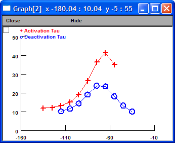

| Ih in Sonia's model | Kinetic Scheme | |
| gbar (S/cm2) | 4e-5 | 3.7e-5 |
| Time Constant (ms) | 24.3 | 23.4 |
| Rin (MΩ) | 56.9 | 53.3 |
| Rebound Slope (mV/mV) | -0.17 | -0.15 |
| Temporal Summation (%) | 11.0 | 7.5 |
| Depolarizing Resonance Frequency (Hz) | 3.5 | 3.5 |
| Hyperpolarizing Resonance Frequency (Hz) | 4.5 | 5.2 |
| Vhalf (mV) | -81.1 | -79.7 |
| k (mV) | 7.90 | 8.54 |
Conclusion: Both models are good.
Create "nrnmech.dll".
Start "Main.hoc".
Click "Pulse (1 ms)" button.
Click "Initiate & Run" button.
Change "gbar_h" to 3.73e-5 so the resting potential is at -65 mV.
Click "Fit Decay" button. Tau = 24.3 (ms).
Click "Current Step (500 ms)" button.
Click "Run Step Family" button.
Click "Measure Rin (LR)" button. Rin = 53.3 (M Ohm).
Click "Measure Rebound Slope (LR)" button. Rebound Slope = -0.15 (mV/mV).
Click "Five Alpha EPSCs (20 Hz)" button.
Click "Initiate & Run" button.
Click "Measure Temporal Summation" button.
Temporal Summation = 7.5 (%).
Click "Chirp" button.
Click "Initiate & Run" button.

Click "Characterize Chirp Response" button.
Click "Fit Impedance Amplitude" button.

Depolarizing Resonance Frequency = 3.5 (Hz)
Hyperpolarizing Resonance Frequency = 5.2 (Hz)
Click "Plot Voltage Lag" button.

G-V Curve and Tau-V Curve
Click "Voltage Clamp" button.
Click "Run Activation Step Family" button.
Click "Fit GV Curve" button.

vhalf = -79.7 (mV)
k = 8.54 (mV)
Click "Run Deactivation Step Family" button.
Click "Plot Tau" button.
